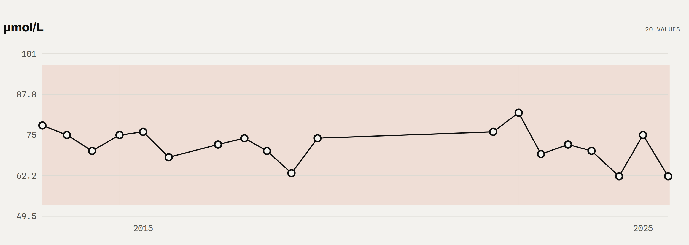

The folder the patient brought, read before the visit. Every value one click from its page.
Epicrisis turns the paper a patient carries in — other clinics’ letters, other
laboratories’ forms, in five languages — into a structured archive on your own servers. Your
clinician reads it in one place, can question it through an AI assistant, and every answer points
back to the scan. The archive shows what the documents say. Your clinicians decide.

Demo data, invented patient. One test over thirteen years, drawn from forms somebody else
printed. The shaded band is the range printed on each form, held until another form printed a
different one: it moves because laboratories differ, not because anything was calculated. Every
value keeps its date, its institution and the scan it came from.
01 What the clinician gets
One timeline per test across laboratories, countries and languages. Units are kept as
printed; mg/dL and µmol/L never land on one chart.
The range of that form, on that day. The band on a chart is what the laboratory printed
beside the value, not a table of ours — where a form printed no range, there is no band.
Every value one click from its scan. The page is the authority, and a line read
wrongly is corrected by hand in seconds.
Search over every word of every document, matching across Cyrillic and Latin
spellings of one test.
Checks with no model at all: the same result filed three times, a stored number that
differs from the print, a date nobody could read.
02 Why it fits a clinic
Three modes, strictest by default.As printed: shown as the forms wrote it,
nothing compared. May also read the values: a model may say what a value means and how it
moved. No limits set here: the model answers under no rule of ours, and only here does
the application itself compare a number with the range printed beside it. The last two were
written for a person reading their own records — the model is told that the person asking
is the person the records are about — so the mode that fits a clinic reading somebody
else's file is the first. Your instance, your choice, on its own Settings page.
Inside your perimeter. Self-hosted, no vendor cloud, no telemetry. Model calls go
out with your own key, or not at all.
One archive per patient, isolated by construction, and every page carries the name
of the one whose records are open.
It reads and cites; it does not diagnose, triage or decide. Not a medical device, and
nothing here changes who is responsible for a clinical decision.
It holds what was brought and could be read, and says so: a test missing from this
archive is not a test that was never taken.
Source-available. Your IT and clinical governance read every line before it is
installed.
01
A new patient with a folder
Years of somebody else’s
paper, searchable before the visit ends.
02
Referral and second opinion
The whole history in one place,
with the form behind every number.
03
Before a procedure
Which tests exist, when they were taken,
and what that form printed.
04
Patients from abroad
RU, UK, EN, ES and EL forms on one
timeline, each in its own words.
500+
Documents read
5,000+
Values as printed
761
Tests in the suite
1989–2026
Years covered
200+
Institutions · 5 languages
Looking for two or three clinics or departments for a pilot.
Your own files, on your own server. We learn what your clinicians actually need; you keep
everything. A data processing agreement under Article 28 GDPR comes with the licence.